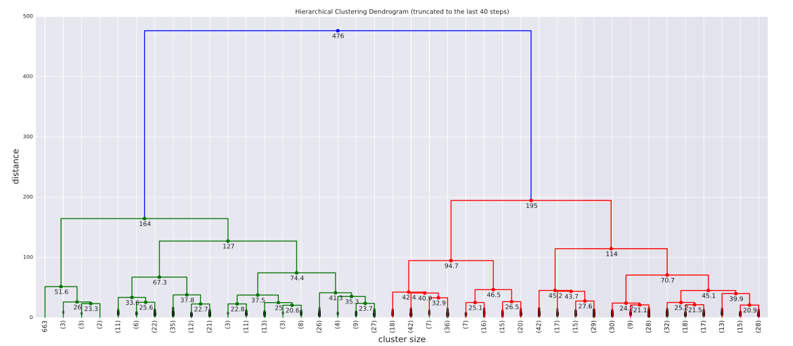
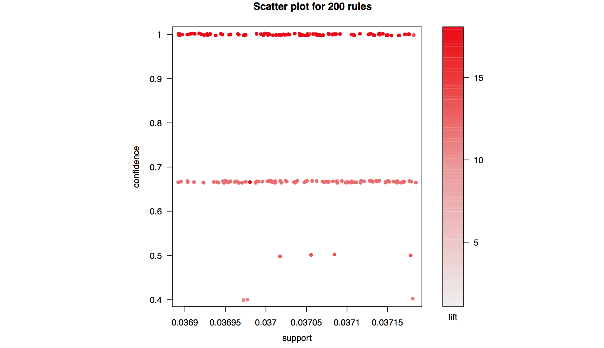

Clustering
Clustering falls in the unsupervised learning category where the goal is to identify similar groups whithin a dataset. There exist various approaches to clustering but all of them require some domain knowledge in order to interpret the results.
The example shown above is an instance of Hierarchical Agglomerative Clusteing. This type of clustering allows us to choose the cost function between clusters (linkage). In general, som of the advantages of Hierarchical clustering works well for data that has a natural hierarchy and it is alos easy to choose the best resolution for the problem. Nevertheless, this clustering has a high time and space complexity and also performs local optimizations since the merges are final.
To see a detailed analysis of all clustering methods:
Association Analysis
Similar to clustering association analysis falls under the categroy of unsupervised learnging, where the true label of our data is unkown. Typically, association analysis is used to discover interesting rules within a dataset (i.e. which items are likely occur together etc.).
- Confidence, support and lift are used to evaluate association analysis rules.
- Apriori Algorithm reduces the search space dramatically.
- Apriori principle: if an itemset is frequent then all of its subsets must also be frequent
To see more on Association Analysis as well as an application of in a real life problem:
Prediction/Linear Regression
In the context of linear regression we are trying to solve a very simple problem. Given a sequence of pairs of points \( (x_1, y_1) \dots (x_n, y_n)\) we are trying to find the polynomial that best fits these points with respect to a loss function (least squares is very commonly used in these cases). Essentially we are trying to come up with a function of the form: $$ y = \beta_0 x^0 + \beta_1 x^2 + \beta_2 x^2 + \dots \beta_k x^k$$We show mathematically how to find the set of coefficients which minimizes the square loss function.
Let \( \boldsymbol{Y} \in \mathbb{R}^{n}, \boldsymbol{X}\in \mathbb{R}^{n\times k}, \boldsymbol{\beta}\in \mathbb{R}^{k} \). Then, in the context of linear regression, we need to find the coefficients \( \boldsymbol{\beta} \) that minimize our error function. In this case let the error function be \( \mathcal{L}: \mathbb{R}^{n} \rightarrow \mathbb{R} \) with formula: $$ \mathcal{L}(\boldsymbol{\beta}) = || {\boldsymbol{Y}- \boldsymbol{X}\boldsymbol{\beta} } || ^2 = (\boldsymbol{Y}-\boldsymbol{X}\boldsymbol{\beta})^{T})(\boldsymbol{Y}- \boldsymbol{X}\boldsymbol{\beta} ) .$$ Our objective is to minimize the loss w.r.t. \( \boldsymbol{\beta} \) hence we need to find \( \hat{\boldsymbol{\beta}}\) such that \( \mathcal{L}\) is minimum. Before taking the derivative we expand the expression for the loss: $$ (\boldsymbol{Y}- \boldsymbol{X}\boldsymbol{\beta})^{T})(\boldsymbol{Y}- \boldsymbol{X}\boldsymbol{\beta} ) =\\ \boldsymbol{Y}^{T}\boldsymbol{Y}- (\boldsymbol{X}\boldsymbol{\beta})^{T} \boldsymbol{Y} - \boldsymbol{Y}^{T} \boldsymbol{X}\boldsymbol{\beta} - (\boldsymbol{X}\boldsymbol{\beta})^{T}\boldsymbol{X}\boldsymbol{\beta}= \\ \boldsymbol{Y}^{T}\boldsymbol{Y}-2\boldsymbol{Y}^{T} \boldsymbol{X}\boldsymbol{\beta} - \boldsymbol{\beta}^{T}\boldsymbol{X}^{T}\boldsymbol{\beta}\boldsymbol{X} $$ In order to compute the derivative of above, we need to show the following results: Let \(f(\boldsymbol{\beta}) = \boldsymbol{c}^{T} \boldsymbol{\beta} \). Then: $$f= \sum_{i=1}^{k} c_{i}\beta_{i} $$ Hence: $$ \frac{\partial f} {\partial \beta_{w}}= \sum_{i=1}^{k} c_{i} \frac{\partial \beta_{i}} {\partial \beta_{w}} = c_{w} $$ So: $$\nabla_{\boldsymbol{\beta} } f = \boldsymbol{c}$$ Now let the more interesting function \(f(\boldsymbol{\beta})= \boldsymbol{\beta}^{T} \boldsymbol{A}\boldsymbol{\beta}\), for \(A\) k-dimensional square matrix. Then: $$ f= \sum_{i=1}^{k} \sum_{j=1}^{k} \alpha_{ij} \beta_{i} \beta_{j} $$ Differentiating this expression we get: $$ \frac{\partial f} {\partial \beta_{w}}= \sum_{i=1}^{k} \sum_{j=1}^{k} \alpha_{ij} \frac { \partial (\beta_{i} \beta_{j}) } {\partial \beta_{w}} = \sum_{i=1}^{k} \sum_{j=1}^{k} \alpha_{ij} ( \delta_{i,w} \beta_{j} + \delta_{j,w}\beta_{i} )= \\ \sum_{j=1}^{k} \alpha_{wj} \beta_{j} + \sum_{i=1}^{k} \alpha_{iw} \beta_{i} = (\boldsymbol{A} \boldsymbol{\beta} )_{w} + \sum_{i=1}^{k} (\boldsymbol{A})^{T}_{w,i} \, \beta_{i}= (\boldsymbol{A} \boldsymbol{\beta} )_{w} + (\boldsymbol{A}^{T} \boldsymbol{\beta} )_{w} $$ Hence we gey that: $$ \nabla_{\boldsymbol{\beta} } f = (\boldsymbol{A+A^{T}}) \boldsymbol{\beta} $$ Finally, we are in place to differentiate the original equation using our two latest results. Let \( \boldsymbol{Y}^{T} \boldsymbol{X} = \boldsymbol{c}\) and also let \(\boldsymbol{X}^{T}\boldsymbol{X}=\boldsymbol{A}\) . Then we get: $$ \nabla_{\boldsymbol{\beta}} \mathcal{L}= \boldsymbol{0} - 2 \boldsymbol{Y}^{T} \boldsymbol{X} + (\boldsymbol{X}^{T}\boldsymbol{X} +(\boldsymbol{X}^{T}\boldsymbol{X})^{T} ) \boldsymbol{\beta}= \\ -2 \boldsymbol{Y}^{T} \boldsymbol{X} + 2\boldsymbol{X}^{T}\boldsymbol{X} \boldsymbol{\beta}= 2(\boldsymbol{X}^{T}\boldsymbol{X} \boldsymbol{\beta} - \boldsymbol{Y}^{T} \boldsymbol{X} ) $$ Equating the derivative with \( \mathbf{0}\) and solving the equation we get \( \hat{\boldsymbol{\beta}}\): $$ \boldsymbol{X}^{T} \boldsymbol{X} \hat{\boldsymbol{\beta}}-\boldsymbol{X}^{T}\boldsymbol{Y} =\mathbf{0} \iff \boldsymbol{X}^{T} \boldsymbol{X} \hat{\boldsymbol{\beta}}- \boldsymbol{X}^{T}\boldsymbol{Y}=\mathbf{0} \iff \boldsymbol{X}^{T} \boldsymbol{X} \hat{\boldsymbol{\beta}} = \boldsymbol{X}^{T}\boldsymbol{Y} \iff \hat{\boldsymbol{\beta}}= (\boldsymbol{X}^{T} \boldsymbol{X})^{-1} \boldsymbol{X}^{T}\boldsymbol{Y} $$
It has to be noted that this is a very simple linear regression model which suffers from many drawbacks such as overfitting. Other more complex regression models exist and use regularizers to control the size of the coefficients (Lasso etc.)
For an application of linear regression in a real life scenario see:Classification
Similar to prediction, classification falls under the category of supervised learning. The only difference with prediction, is that now the labels we are trying to predict are discrete. There is a variety of classification models used in practise but some of the most common ones are: Logistic Regression, Support Vector Machines, Neural Networks .
More content to be added soon ...